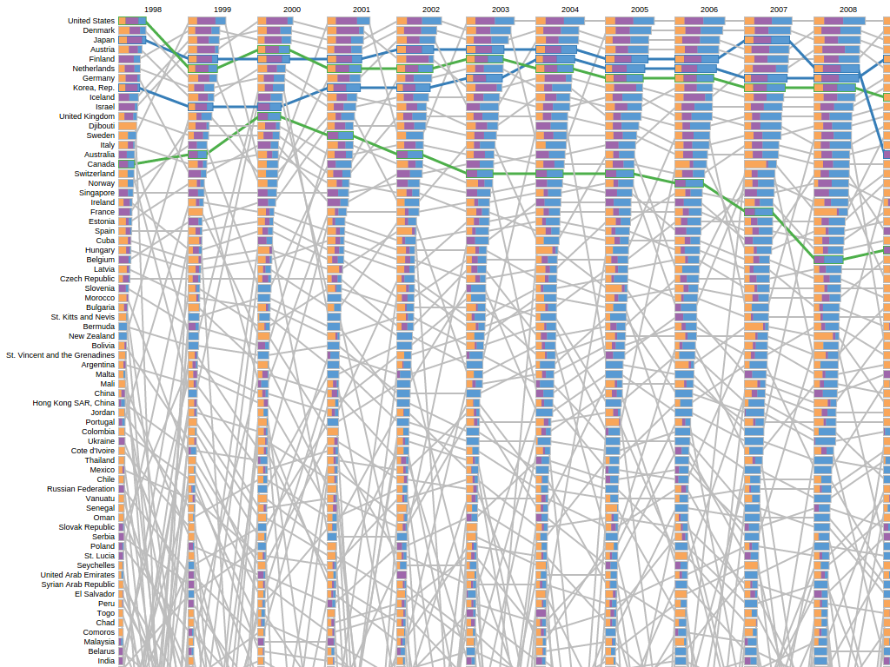

Tyler D. Brooks (tdb17) and Jaromir Savelka (jas438)

The figure shows the main visualization with the ranking time paths for the United States and Canada highlighted in green and for Japan and the Korea Republic in blue. This particular setup allows one to see that while the two high-tech West Asia countries are holding to their top ranks throughout the period of interest the two North America countries are losing their top ranks.
Ranking time paths: Rise of the knowledge-based economies is an interactive visualization about how much effort individual countries put in becoming knowledge-based economies during the period between 1998 and 2012. The visualization uses data about government per student in primary education (% of GDP per capita), research and development expenditure (% of GDP), and percentage of internet users obtained from the World Bank data center. We believe that we can use this data to create a visualization showing which countries are able to make long term investments in these areas which should bring them great benefits in the future. We are interested in this particular problem because despite the use of historical data it should offer interesting insights about the future.
Try it online here.